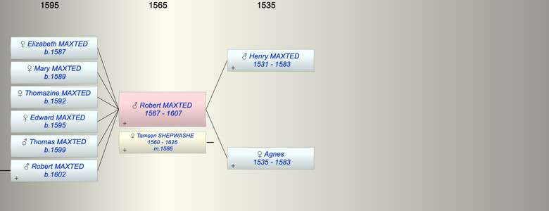

| [Index] |
| Robert MAXTED (1567 - 1607) |
|  |
| b. 1567 |
| m. 07 Nov 1586 Tamsen SHEPWASHE (1560 - 1626) at Chilham |
| d. 1607 at St Laurence aged 40 |
| Parents: |
| Henry MAXTED (1531 - 1583) |
| Agnes (1535 - 1583) |
| Siblings (1): |
| Edward MAXTED |
| Children (6): |
| Elizabeth MAXTED (1587 - ) |
| Mary MAXTED (1589 - ) |
| Thomazine MAXTED (1592 - ) |
| Edward MAXTED (1595 - ) |
| Thomas MAXTED (1599 - ) |
| Robert MAXTED (1602 - ) |
| Grandchildren (2): |
| Ann MAXTED (1633 - 1685), John MAXTED (1636 - 1700) |
| Events in Robert MAXTED (1567 - 1607)'s life | |||||
| Date | Age | Event | Place | Notes | Src |
| 1567 | Robert MAXTED was born | ||||
| 1583 | 16 | Death of father Henry MAXTED (aged 52) | Chilham | Note 1 | |
| 1583 | 16 | Death of mother Agnes (aged 48) | left a will | ||
| 07 Nov 1586 | 19 | Married Tamsen SHEPWASHE (aged 26) | Chilham | Note 2 | |
| 1587 | 20 | Birth of daughter Elizabeth MAXTED | Chilham | bap 3 Sep | |
| 1589 | 22 | Birth of daughter Mary MAXTED | Chilham | bap Chilham 25 Jan 1589/90 | |
| 1592 | 25 | Birth of daughter Thomazine MAXTED | Chilham | bap 21 Jan 1592/93 | |
| 1595 | 28 | Birth of daughter Edward MAXTED | Chilham | bap 30 Nov 1595 | |
| 1599 | 32 | Birth of son Thomas MAXTED | Chilham | bap 15 Apr 1599 | |
| 1602 | 35 | Birth of son Robert MAXTED | |||
| 1607 | 40 | Robert MAXTED died | St Laurence | ex date of his Will | |
| Death of son Robert MAXTED | Note 3 | ||||
| Personal Notes: |
|
Robert Maxted senior was Churchwarden at St Laurence in 1604 and 1605 (ex Cotton) and 4 died in 1607 and was buried at St Laurence on 6 Oct 1607 ex FMP PR transcripts His will (PRC17/59/69a PRC16/131) was proved in 1607.
Will of Robert Maxted 1607. In it he mentions his two sons Thomas and Robert, both under 21, and his three daughters Elizabeth Mary and Thomazine, all under 21, also his wife Thomazine. His brother Edward Maxted is named and his brother in law John Shepwashe, Key points to be buried in St Lawrence sons Robert and Thomas to inherit when full age wife Thomasine executor daughters Elizabeth, Mary and Thomasine when 21 brother Edward (definitely Edward not Edmund) my ???? brother John Shepwashe??? (must be brother in law) no mention of Ozengell |
| Created on a Mac™ using iFamily for Mac™ on 8 Oct 2023 |